Эволюция Windows: как менялась самая популярная ОС за 29 лет
Становление дизайна самой популярной десктопной ОС в мире, а также удачные и провальные решения
Microsoft.
Оглавление:
- ◎ Windows 1.0 (1985)
- ◎ Windows 1.0 (1985)
- ◎ Windows 3.0 (1990)
- ◎ Windows NT 3.1 (1993)
- ◎ Windows 95 (1995)
- ◎ Windows 98 (1998)
- ◎ Windows 2000 Professional(2000)
- ◎ Windows Millenium Edition (Me) (2000)
- ◎ Windows XP (2001)
- ◎ Windows Vista(2007)
- ◎ Windows 7 (2009)
- ◎ Windows 8 (2012)
- ◎ Windows 10 (2014)
Windows 1.0 — 20 ноября 1985 года
В начале 80-х был лишь один компьютер, с которым рядовой пользователь мог общаться на «ты» — Lisa от
Apple. Проект оказался провальным, но, с одной стороны, он подготовил почву для Mac, а с
другой — создал прецедент использования графического пользовательского интерфейса.
Изначально идея интерфейса WIMP (Windows, Icons, Menu, Pointer) принадлежала Xerox.
Но, не сделав ничего толкового, Xerox передала идею Apple, которая превратила окна, меню, иконки и
курсор в главную «фишку» потребительских ПК.
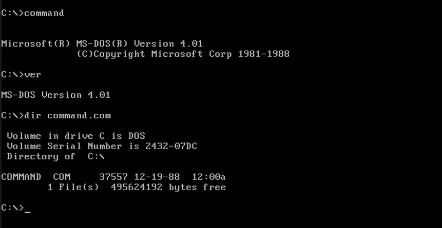
А тем временем компания Microsoft во главе со Стивом Баллмером, Биллом Гейтсом и Полом Алленом
работала над операционной системой MS-DOS, командная строка которой была посредником между
человеком, «железом» и программами.
Пользовательский опыт от MS-DOS был диаметрально
противоположным тому, что предлагала система Apple. И, конечно же, Microsoft не могла закрыть на это
глаза.
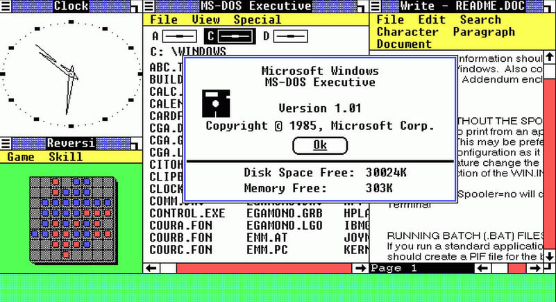
В итоге в 1983 году было объявлено о начале работы над графическим интерфейсом для MS-DOS, а 20
ноября 1985 года официально вышла программная оболочка для MS-DOS под названием Windows 1.0.
Системные требования были такими: MS-DOS 2.0, наличие двух дискет или жесткого диска,
графического адаптера и минимум 256 КБ оперативной памяти.
Windows 1.0 не смогла стать
настолько же популярной, как и Macintosh от Apple. Однако Microsoft все равно поддерживала ее на
протяжении 16 лет, до 31 декабря 2001 года.
Наверх ⇧
Windows 2.0 — 9 декабря 1987
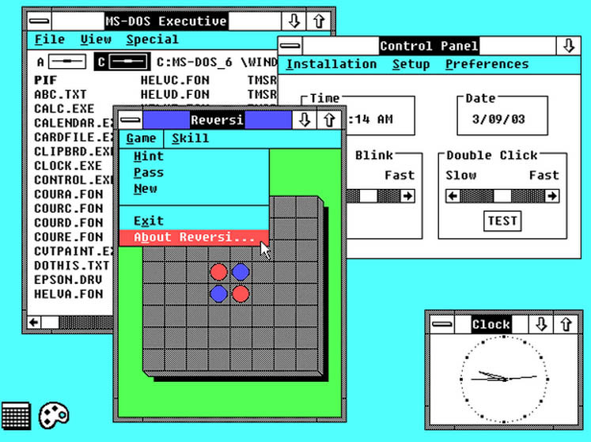
Microsoft выпускает вторую версию Windows с улучшенной графикой. Windows 2.0 взяла все, что
мог дать новый процессор Intel 286, а позже и Intel 386.
Был увеличен объем
памяти, внедрена функция наложения окон друг на друга, на рабочем столе появились значки, а
пользователь мог общаться с системой при помощи «горячих» комбинаций клавиш.
Windows 2.0
помогла Microsoft стать самой крупной компанией в разработке ПО.
Наверх ⇧
Windows 3.0 — 22 мая 1990 года
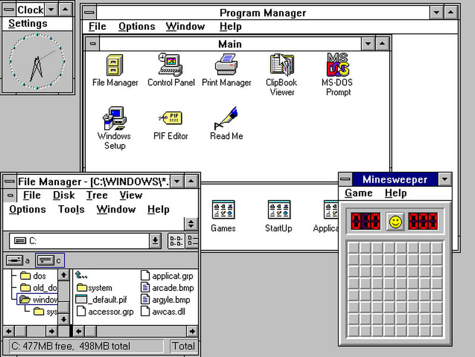
С Windows 3.0 начинается успех системы. Пользовательский интерфейс был переделан под
16-цветную гамму, улучшилась работа с памятью.
В это же время выходит комплект разработки
программного обеспечения (SDK), благодаря которому с разработчиков была снята часть
ответственности за написание драйверов для устройств.
А в сентябре 1990 года Windows 3.0
начинает комплектоваться пакетом офисных приложений Microsoft Office, который включал в себя
Word, Excel и Powerpoint.
За первые два года было продано 10 миллионов копий. Кстати,
немалую роль в успехе Windows 3.0 сыграла игра «Сапер», которая и по сей день помогает
офисным сотрудникам скоротать на работе время.
Наверх ⇧
Windows NT 3.1 — 27 июля 1993 года
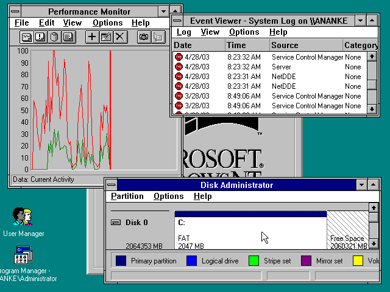
Эта 32-битная операционная система была нацелена на бизнес-сегмент и включала многозадачный
планировщик для Windows-приложений, интегрированные сети, безопасность сервера домена, OS/2
иPOSIX подсистемы, поддержку нескольких процессорных архитектур. В ней же впервые увидела
свет файловая система NTFS.
В узких кругах Windows NT 3.1 считалась одной из самых
стабильных операционных систем, и неспроста. Ветвь NT развивалась независимо от других ОС
семейства Windows, и она не имела ничего общего с MS-DOS.
В ее основе лежали плоды
сотрудничества Microsoft и IBM над OS/2. Но дружба двух компаний не удалась, и OS/2 3.0 было решено
переделать в Windows NT, которая спустя много лет спасет доброе имя операционной системы.
Наверх ⇧
Windows 95 — 24 августа 1995 года
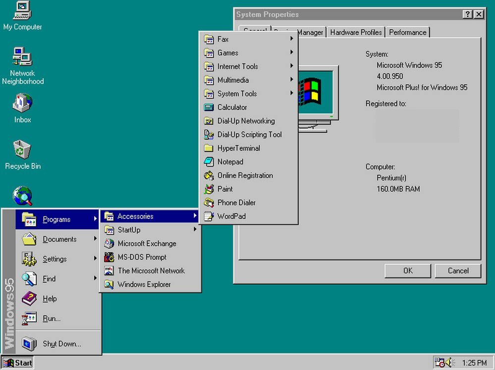
Несмотря на то что Windows 95 была распродана в количестве 7 миллионов копий, общественность
относилась к новинке с недоверием и даже некоторой агрессией. В отличие от предыдущих версий,
которые устанавливались поверх MS-DOS, новая Windows 95, будучи уже полноценной операционной
системой, построенной на базе MS-DOS и Windows 3.0, требовала абсолютного ухода от старых добрых
командной строки и конфигурационных файлов autoexec.bat и config.sys.
Взамен она предлагала, мягко
говоря, не совсем стабильную работу в доселе неизведанной среде. В итоге самую разрекламированную
систему окрестили именем «Маздай» (от англ. «must die» — должен умереть) и WinDoze (с
англ. «Сонные
окна»).
Рядовому же пользователю деваться было некуда. Ничего не понимая в популярных среди
«программистов» и «фидошников» Linux, OS/2 и WinNT, он был вынужден мириться с
«особенностями»
Windows 95, регулярно переустанавливая ее, чтобы вновь обрести былую стабильность.
Кстати, именно в Windows 95 сформировался привычный всем графический интерфейс с такими элементами,
как кнопка «Start» со своим меню, панель задач и рабочий стол со значками. Также пользователи
Windows 95 стали первыми, кто узнал, что такое BSOD — «Синий экран смерти».
Наверх ⇧
Windows 98 — 25 июня 1998 года
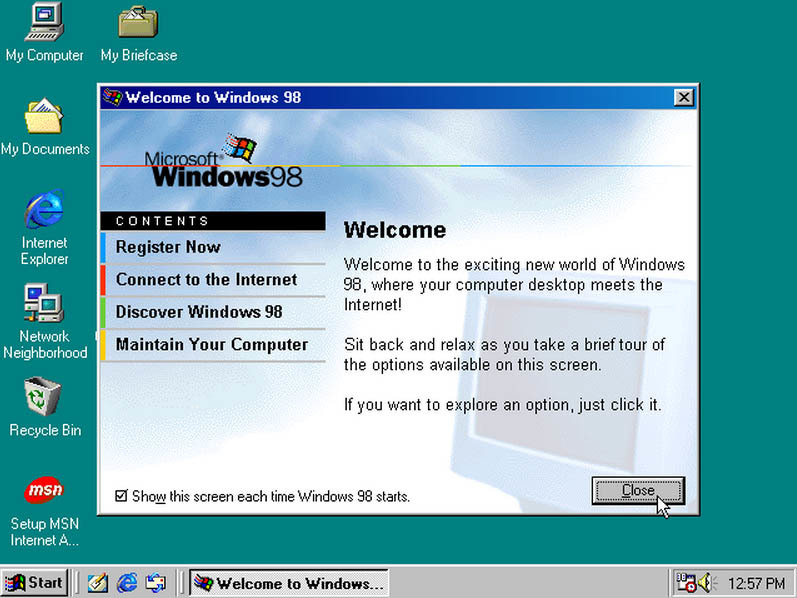
Разработанная «специально для потребителей», Windows 98 включала в себя поддержку
DVD-дисков и USB-устройств, имела утилиту Windows Update, которая автоматически
устанавливала обновления операционной системы.
Однако наученные горьким опытом общения с
«Маздаем», пользователи не спешили переходить на Windows 98, считая ее лишь переходным звеном
между Windows 95 и грядущей Windows Millenium, которая как раз и призвана была избавить всех
от страданий на пороге нового века.
Наверх ⇧
Windows 2000 Professional — 17 февраля 2000 года
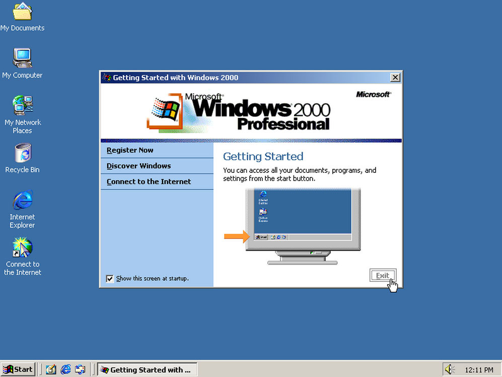
Однако явления Мессии не случилось. Windows 2000 Professional оказалась системой для
бизнес-сегмента, в которой помимо реализации упрощенной установки оборудования, поддержки
USB-устройств, беспроводных устройств, IEEE 1394 и инфракрасных устройств была масса уязвимостей,
которые на протяжении 10 лет латались с помощью нескончаемых обновлений.
Некоторые энтузиасты,
однако, верили в рекламу Microsoft и, считая Windows 2000 самой безопасной ОС (ведь она принадлежала
к семейству Windows NT), с рвением устанавливали ее на домашние компьютеры своим знакомым вместо
ненавистного «Маздая».
Наверх ⇧
Windows Millenium Edition (Me) — 14 сентября 2000 года
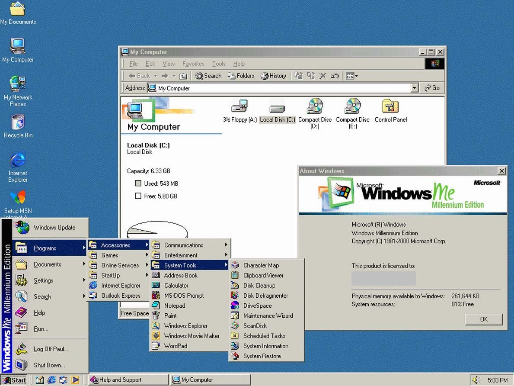
Очередная злая шутка Microsoft над жаждущими просвета пользователями, Windows Me, была написана на
основе кода Windows 95, и поэтому мало кто хотел менять шило на мыло. Между тем, новая система
получила весьма полезную утилиту «Восстановление системы», которая в случае критической
ошибки позволяла откатиться к ранее сохраненному состоянию без сноса и повторной переустановки
системы и всех программ.
Поскольку Windows Me предназначалась для конечного пользователя, она
включала в себя средства для просмотра и редактирования видео —Windows Media Player и
Windows Movie Maker . WinMe стала последней системой на базе Windows 95.
Наверх ⇧
Windows XP — 25 октября 2001 года
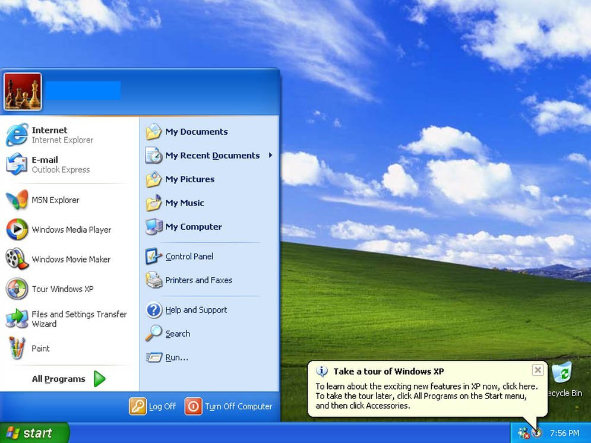
И вот случилось то, чего все так ждали. Появилась красивая, понятная, быстрая, стабильная Windows,
которая сразу же сожгла все мосты, заставив позабыть все — от Windows 95 до Windows ME, — как
страшный сон.
Кодовое имя новой системы Windows NT 5.1 внушало знающим людям еще больше
уверенности. Да, все блага систем семейства Windows NT теперь доступны и для простых смертных,
причем в наилучшем виде.
Вплоть до августа 2012 года Windows XP была самой используемой операционной системой для доступа в
интернет.
Наверх ⇧
Windows Vista — 30 января 2007 года
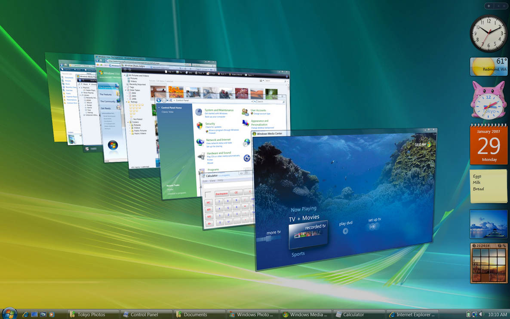
И вновь Microsoft терпит неудачу. В памяти людей Windows Vista осталась как медленная,
глючная, нестабильная система с красивым интерфейсом, который энтузиасты переносили на лишенную всех
этих недостатков и проверенную временем Windows XP.
Тем не менее Microsoft все же продала более
100 миллионов лицензий Vista в течение первого года продаж.
Windows 7 — 22 октября 2009 года
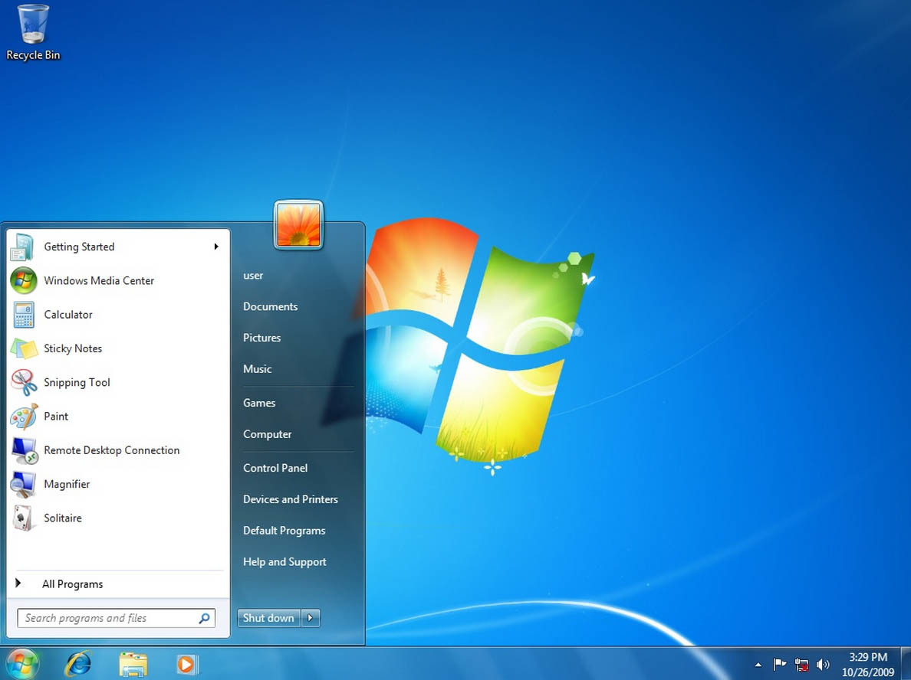
К новой операционной системе не было никаких вопросов. Быстрая, стабильная, с красивым интерфейсом
Aero, Windows 7 стала быстро разлетаться по домашним и офисным компьютерам.
Некоторые знатоки, однако, замечали, что XP более подходит для некоторых задач, чем «Семерка».
Например, жесткие диски свежекупленных нетбуков с Windows 7 Starter тут же форматировались и
отдавались под Windows XP. Также к Windows 7 настороженно относились в среде тех музыкантов и
звукорежиссеров, которые выбрали PC, а не Mac.
Windows 7 научилась правильно работать с различными сетями, самостоятельно устанавливать драйвера к
подключаемым устройствам, получила такую совершенную систему безопасности, которая снимает
необходимость устанавливать сторонний антивирус.
Также в Windows 7 появилась поддержка
сенсорных экранов, которая полностью реализовалась лишь в следующей версии.
Наверх ⇧
Windows 8 — 26 октября 2012 года
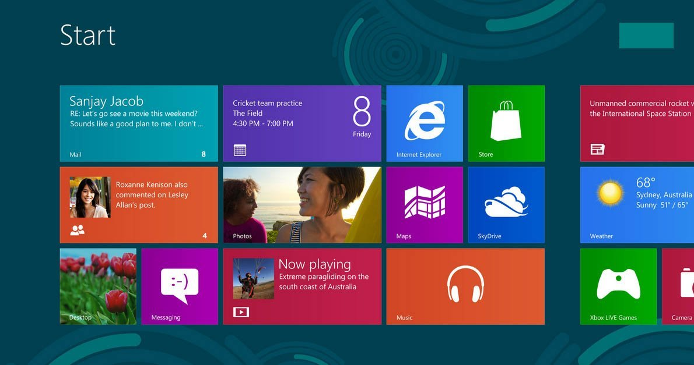
Операционная система Windows 8 получила полностью переработанный «плиточный» интерфейс
Metro,
задачей которого было привести мобильные устройства с сенсорным экраном и компьютеры к схожему
пользовательскому опыту.
Для удобства работы с ПК без сенсорного экрана в систему был встроен и
«классический» рабочий стол. Кнопку «Start» убрали, заменив ее «активным углом», нажатие на который
открывало стартовый экран с «плитками». Плитки на стартовом экране можно перемещать и группировать,
давать группам имена и изменять размер плиток.
Windows 8 — это типичный продукт своего времени. Здесь есть магазин приложений с интерфейсом Metro,
поддержка единой учетной записи Microsoft для синхронизации разных устройств между собой, интеграция
облачного сервиса OneDrive и социальных сетей Facebook и Twitter.
Сегодня подавляющая часть компьютеров все еще работает под Windows XP и Windows 7, и многие еще не
успели (или на захотели в силу своего консерватизма) попробовать на вкус «плиточную» Windows 8,
однако уже скоро появится Windows 10.
Наверх ⇧
Windows 10 — 30 сентября 2014 года
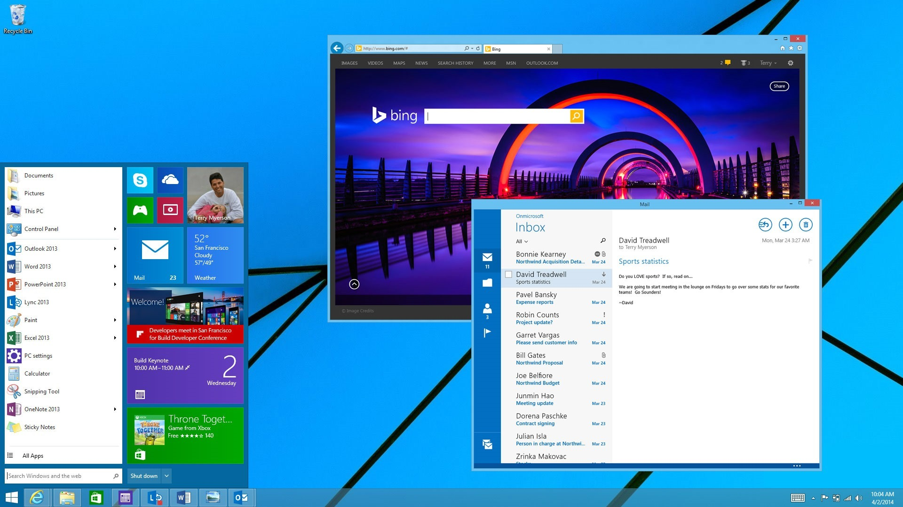
Компания Microsoft была вынуждена признать, что ее попытки сделать интерфейс Metro основным пришлись
не по вкусу консервативным пользователям ПК, и ей не оставалось ничего, кроме как вернуть кнопку
«Start». Также система получит несколько рабочих столов, возможность запуска Metro-приложений в
оконном режиме, а также центр уведомлений.
Наверх ⇧
Источник: hi-tech 30 сентября 2014